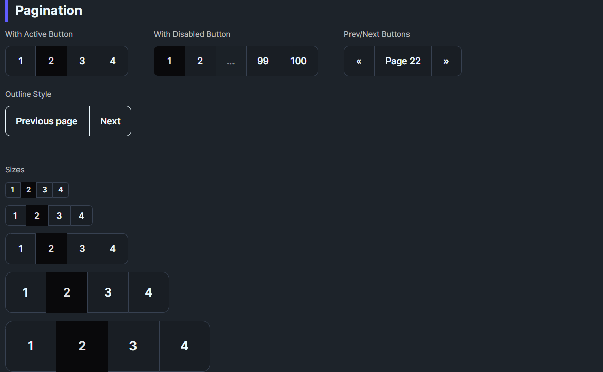

DaisyPagination renders joined page navigation buttons using DaisyJoin internally. It automatically generates page buttons based on TotalPages, handles prev/next navigation, and highlights the current page. The control responds to global size changes via FlowerySizeManager.
| Property | Type | Default | Description |
|---|---|---|---|
CurrentPage |
int |
1 |
The currently selected page (1-based, auto-clamped to valid range). |
TotalPages |
int |
1 |
Total number of pages to display. |
MaxVisiblePages |
int |
7 |
Maximum page buttons to display (minimum 5). When TotalPages exceeds this, ellipsis is shown. |
Size |
DaisySize |
Medium |
Button size preset (ExtraSmall, Small, Medium, Large, ExtraLarge). |
Orientation |
Orientation |
Horizontal |
Layout direction (Horizontal or Vertical). |
ShowPrevNext |
bool |
True |
Whether to show single-chevron prev/next buttons (‹ ›). |
ShowFirstLast |
bool |
False |
Whether to show first/last page buttons (⏮ ⏭). |
ShowJumpButtons |
bool |
False |
Whether to show double-chevron jump buttons (« »). |
JumpStep |
int |
10 |
Number of pages to skip when using jump buttons. |
EllipsisText |
string |
"…" |
Text displayed for ellipsis placeholders. |
PageChanged |
EventHandler |
— | Fired with the new page number when navigating. |
<!-- Simple pagination with 7 pages, current page 3 -->
<daisy:DaisyPagination TotalPages="7" CurrentPage="3" PageChanged="OnPageChanged" />
<!-- Small pagination without prev/next -->
<daisy:DaisyPagination TotalPages="5" CurrentPage="1" ShowPrevNext="False" Size="Small" />
<!-- Vertical pagination -->
<daisy:DaisyPagination TotalPages="4" CurrentPage="2" Orientation="Vertical" /><!-- 100 pages with smart truncation - shows: [1] … [48] [49] [50] [51] [52] … [100] -->
<daisy:DaisyPagination TotalPages="100"
CurrentPage="50"
MaxVisiblePages="7" />
<!-- Compact display with fewer visible pages -->
<daisy:DaisyPagination TotalPages="100"
CurrentPage="50"
MaxVisiblePages="5" /><!-- With First/Last buttons (⏮ ⏭) -->
<daisy:DaisyPagination TotalPages="50"
CurrentPage="25"
ShowFirstLast="True" />
<!-- With Jump buttons (« ») to skip 10 pages -->
<daisy:DaisyPagination TotalPages="100"
CurrentPage="50"
ShowJumpButtons="True"
JumpStep="10" />
<!-- Full featured: First/Last + Jump + Prev/Next -->
<daisy:DaisyPagination TotalPages="200"
CurrentPage="100"
MaxVisiblePages="5"
ShowFirstLast="True"
ShowJumpButtons="True"
JumpStep="10" /><!-- Bound to ViewModel -->
<daisy:DaisyPagination TotalPages="{Binding TotalPages}"
CurrentPage="{Binding CurrentPage, Mode=TwoWay}"
PageChanged="OnPageChanged" />private void OnPageChanged(object sender, int newPage)
{
// Update your data based on the new page
LoadPageData(newPage);
// Or update a status display
StatusText.Text = $"Showing page {newPage} of {pagination.TotalPages}";
}The control uses intelligent truncation to keep the UI compact:
1. Always shows first and last page for context
2. Centers visible pages around current page
3. Inserts ellipsis (…) when there are gaps > 1 between pages
4. Adapts to position - shows more pages on the side closer to the edge
TotalPages=100, CurrentPage=1, MaxVisiblePages=7:
‹ [1] [2] [3] [4] [5] … [100] ›
TotalPages=100, CurrentPage=50, MaxVisiblePages=7:
‹ [1] … [49] [50] [51] … [100] ›
TotalPages=100, CurrentPage=100, MaxVisiblePages=7:
‹ [1] … [96] [97] [98] [99] [100] ›
With ShowJumpButtons (order: jump outside, prev/next inside):
« ‹ [1] … [49] [50] [51] … [100] › »
Full featured (order by magnitude: first/last → jump → prev/next):
|← « ‹ [1] … [49] [50] [51] … [100] › » →||← « ‹ [1] … [49] [50] [51] … [100] › » →|
│ │ │ │ │ │
│ │ │ │ │ └── Last (→|) - outermost
│ │ │ │ └───── Jump +10 (») - middle
│ │ │ └──────── Next (›) - innermost
│ │ └─────────────────────────────────────── Prev (‹) - innermost
│ └────────────────────────────────────────── Jump -10 («) - middle
└───────────────────────────────────────────── First (|←) - outermost‹ ›): Single step (±1 page)« »): Jump to nearest multiple of 10|← →|): Jump to edge (first/last page)Jump buttons navigate to exact multiples of JumpStep (default 10), not by a fixed offset:
| Current | « (Back) | » (Forward) |
|---|---|---|
| 53 | → 50 | → 60 |
| 50 | → 40 | → 60 |
| 47 | → 40 | → 50 |
| 10 | → 1 | → 20 |
This makes navigation more predictable - users always land on round numbers like 10, 20, 30, etc.
DaisyPagination uses DaisyJoin internally for:
DaisyJoin.ActiveIndexEach button is a DaisyPaginationItem (extends Button) with:
PageNumber - the page this button represents (null for nav buttons)IsEllipsis - true for ellipsis placeholders (disabled, non-clickable)CurrentPage to your view model and handle PageChanged to load data.ShowFirstLast="True" for quick navigation to extremes.ShowJumpButtons="True" with JumpStep="10".MaxVisiblePages to 5 for very compact layouts.Size for consistent sizing; buttons are square with symmetric padding.FlowerySizeManager.CurrentSize for global sizing.CurrentPage is automatically clamped to valid range (1 to TotalPages).The pagination control uses these icons from DaisyIcons.xaml:
| Icon Key | Style | Usage | |
|---|---|---|---|
DaisyIconChevronLeft |
‹ |
Previous page (single step) | |
DaisyIconChevronRight |
› |
Next page (single step) | |
DaisyIconChevronDoubleLeft |
« |
Jump backward (to previous x10) | |
DaisyIconChevronDoubleRight |
» |
Jump forward (to next x10) | |
DaisyIconPageFirst |
\ |
← | First page (bar + arrow) |
DaisyIconPageLast |
→\ |
Last page (arrow + bar) |
|) = boundary/edge indicator